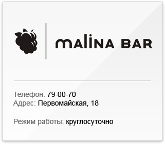
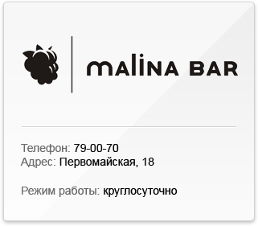
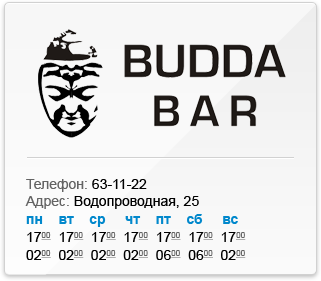
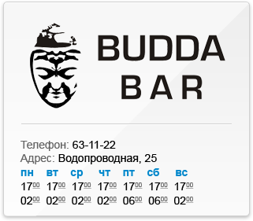

Новый проект Аркадия Новикова занимает несколько зданий городской усадьбы XVIII-XIX веков в окрестностях Таганской площади.
«Гусятникоff» - проект многогранный. Но в первую очередь это - ресторан с традиционной русской кухней.
Первый же этаж отдан VIP кабинетам. Гостей примут в классической бильярдной, восточной курительной и шикарных апартаментах для чинных ужинов, непременно за сигарой.
В главной парадной зале на втором этаже кожей ощущаешь всё величие имперского убранства. Восстановленный оригинальный паркет XIX века, внушительные чёрные гипсовые бюсты, завораживающая роскошью мебель. Дополнительные кабинеты на втором этаже - идеальное место для скрытых от любопытных глаз семейных торжеств или деловых переговоров.
Клуб «Гусятникоff», в особняке по соседству, возвращает обратно в действительность. Солирует в клубе мебель Andrew Martin, выполненная в полярном ресторану ключе: ультрасовременная и дерзкая, с бунтарскими кожаными диванами Mao Red Star и эксклюзивными столами, обтянутыми кожей крокодила. С четверга по субботу здесь проходят тематические вечеринки с участием русских и зарубежных коллективов всех музыкальных направлений, от джаза до рока. И каждый раз за пультом модные столичные диджеи.
В уютном зале караоке-бара на нижнем уровне «Гусятникоff» предоставляет уникальную возможность оценить live-караоке - спеть под живой оркестр в сопровождении back вокала.
Еда в «Гусятникоff» русская, традиционная, основательная. Шеф-повар ресторана рекомендует отведать деликатесную строганину из шотландского лосося, всевозможные разносолы, запеченную ножку домашнего гуся и домашние паштеты. На десерт – шарлотка, эклеры, открытые пироги, вареники с разнообразными начинками. За накрытым традиционными русскими блюдами столом, в сопровождении эмоционального цыганского романса, каждый гость - часть великой истории.
Ресторан открыт 19 февраля 2009 года.

 

 
